.svg)
6 Times AIR-1 in 9 Years
Law Prep Tutorial continues to lead with consistent top ranks, producing 6 All India Rank-1 achievers in CLAT 2017, 2019, 2021, 2022, 2024, and 2026.
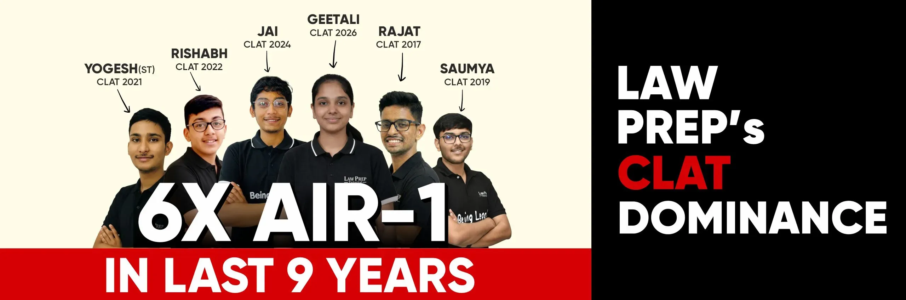
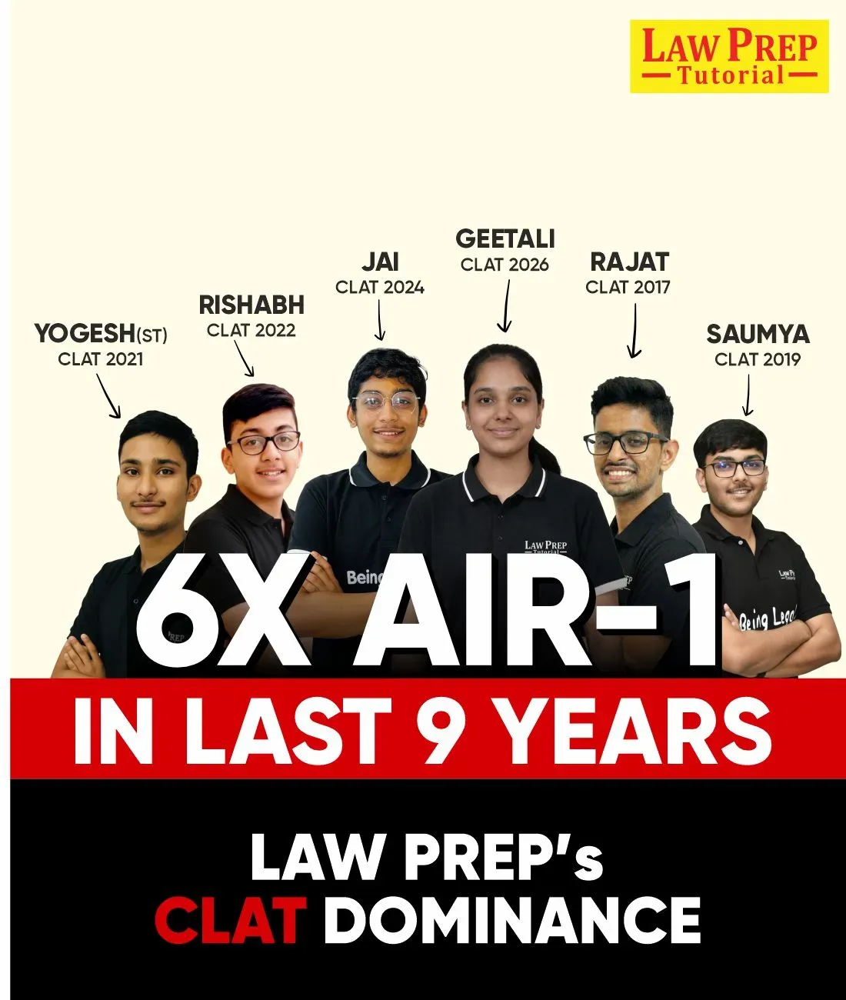
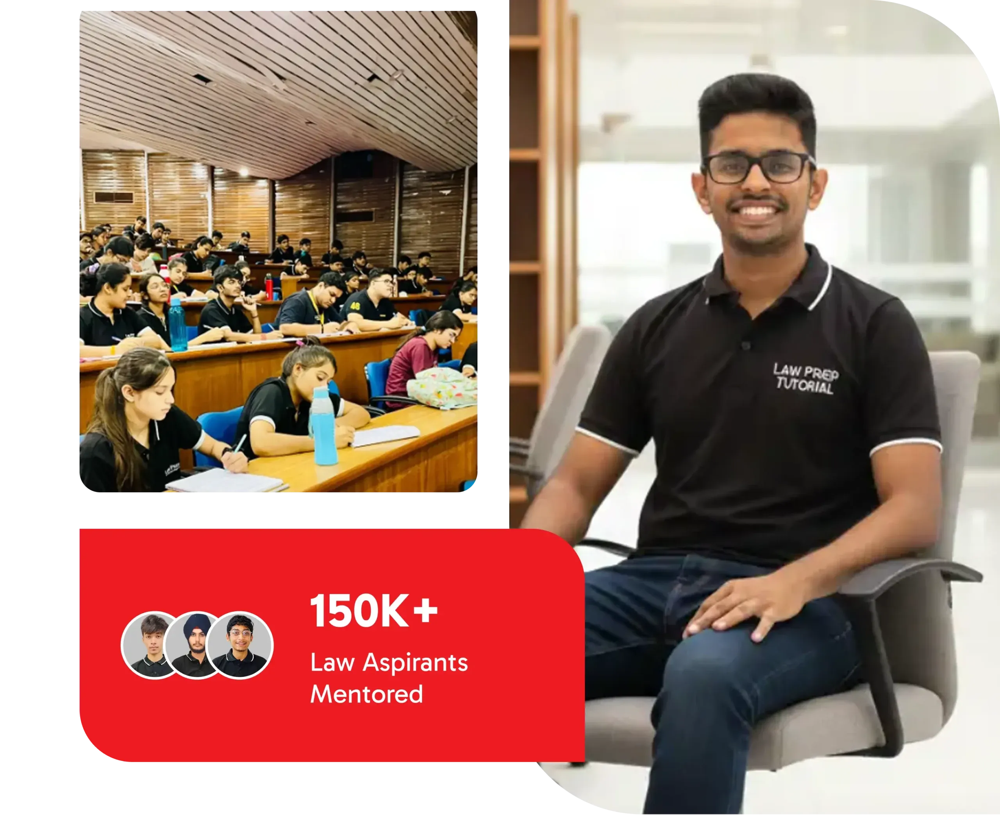
Law Prep Tutorial continues to lead with consistent top ranks, producing 6 All India Rank-1 achievers in CLAT 2017, 2019, 2021, 2022, 2024, and 2026.
Our students secured record-breaking admissions to India’s top National Law Universities through expert guidance and result-oriented CLAT coaching in Kolkata.
With an average of 1000+ NLU selections every year, Law Prep Kolkata maintains the best success rate among all CLAT preparation institutes nationwide.
.svg)
Join our classroom programs in Kolkata.
Access live classes from anywhere.
Attempt full-length & sectional mock tests.
Printed and digital study materials.
Get guaranteed scholarships up to 100% through our entrance-based test. Join the most trusted coaching for CLAT in Kolkata and make your preparation affordable with excellence.
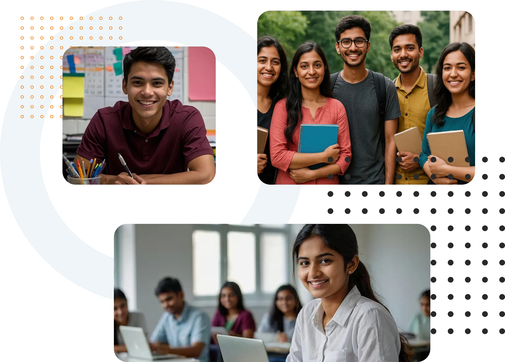
With 24+ years of expertise, we’re the best CLAT coaching in Kolkata, guiding aspirants to consistent NLU success every year.
Our mentors, from top NLUs, make us the most trusted CLAT coaching institute in Kolkata with personalized learning and expert strategies.
Leverage smart dashboards and AI-driven performance analytics for adaptive preparation and continuous improvement at every stage of your journey.
Experience exam-level CLAT mocks and updated study material designed using data-driven insights to match the real difficulty pattern.
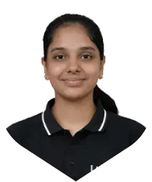
Geetali Gupta
Rohan Joshi
Argh Jain
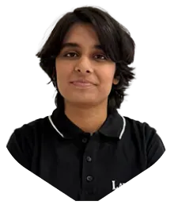
Manvi Yadav
Dhruv Singh
Parth Jadhe
Prathmesh Gaurav
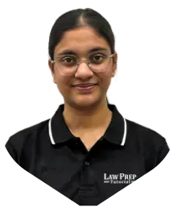
Saanvi Musaddi
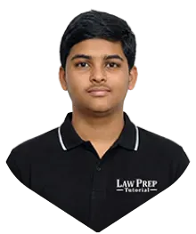
Parthiva Sushanth
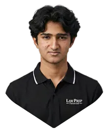
Shravan Subbaraman
Ojas Dixit
Yash Vardhan Pratap
.svg)
Revision is conducted weekly and monthly to strengthen memory and bridge learning gaps. These sessions include quick recaps, quizzes, and summary sheets for all subjects.
We simulate the real exam with full-length and sectional mocks to test time management, accuracy, and exam temperament. Each mock is followed by an in-depth analysis and discussion.
We begin with strong conceptual understanding. Our mentors explain each topic with clarity, examples, and logic, ensuring students grasp the fundamentals of every section before moving ahead.
After every concept, students solve curated questions and sectional exercises. This builds accuracy and speed while reinforcing learning through real-time application and problem-solving techniques.
See how expert mentorship helped students achieve their dream NLUs.
I thank Law Prep Tutorial for making my journey as a CLAT aspirant a remarkable one. The learning and practice materials, mock tests and authentic guidance of mentors was my secret behind cracking CLAT. My sincere thanks for helping me to get into my dream NLU.
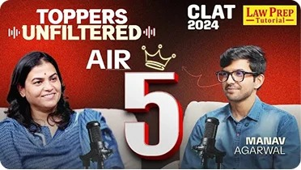

AIR 5 CLAT 2024
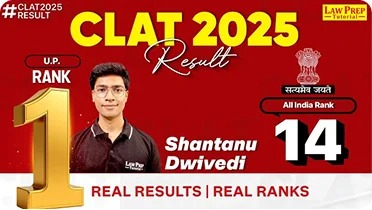
AIR 14 CLAT 2025
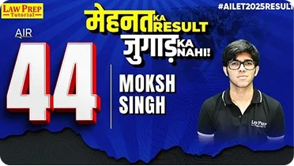
AIR 44 CLAT 2025
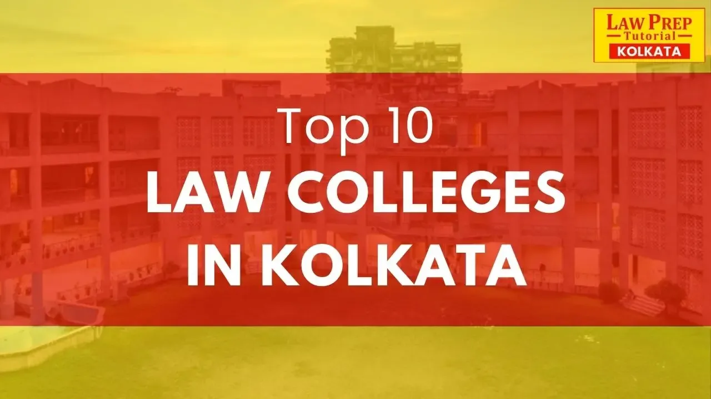
Finding the right CLAT coaching in Howrah is a real challenge for serious aspirants. Many local institutes promise results, but […]
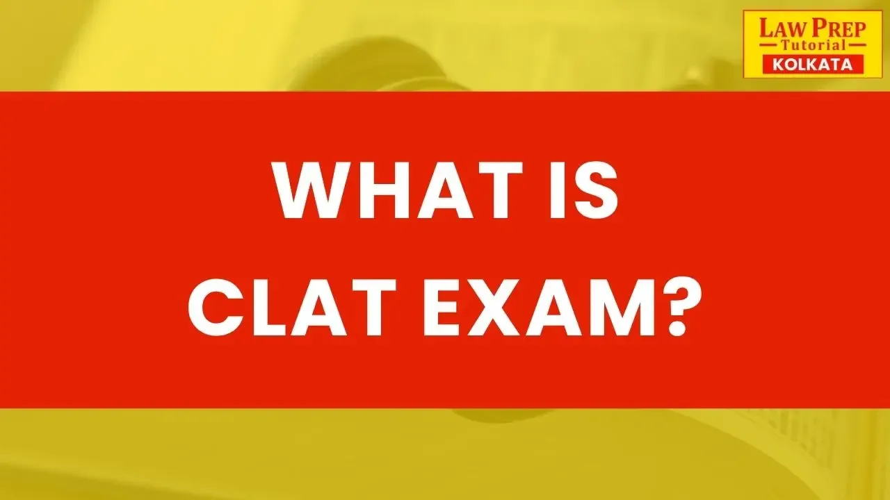
In the debate of Law Prep Tutorial vs LegalEdge, both institutes are recognised names in CLAT preparation, but Law Prep […]
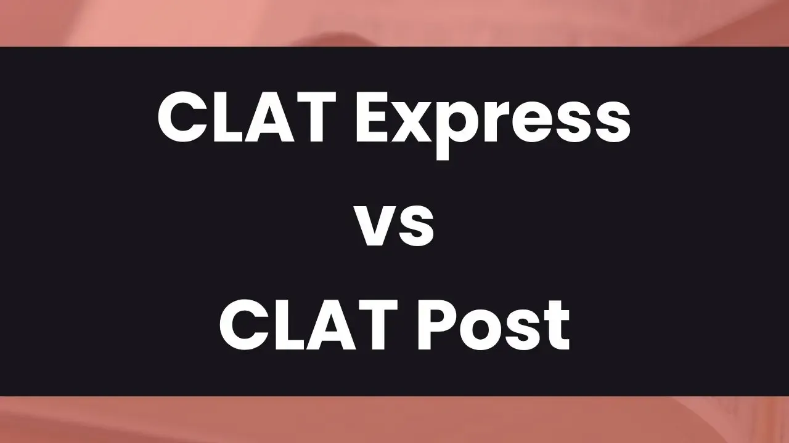
CLAT Express is clearly the better choice in the debate of CLAT Express vs CLAT Post, especially for serious aspirants. […]
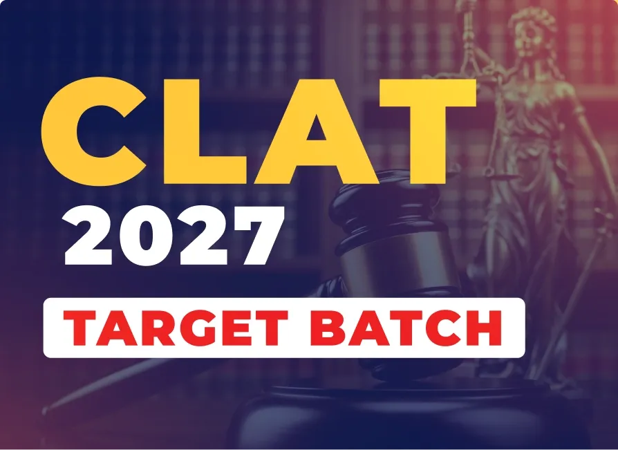
Ideal for Class 12 students targeting CLAT 2027, happening in December 2026.
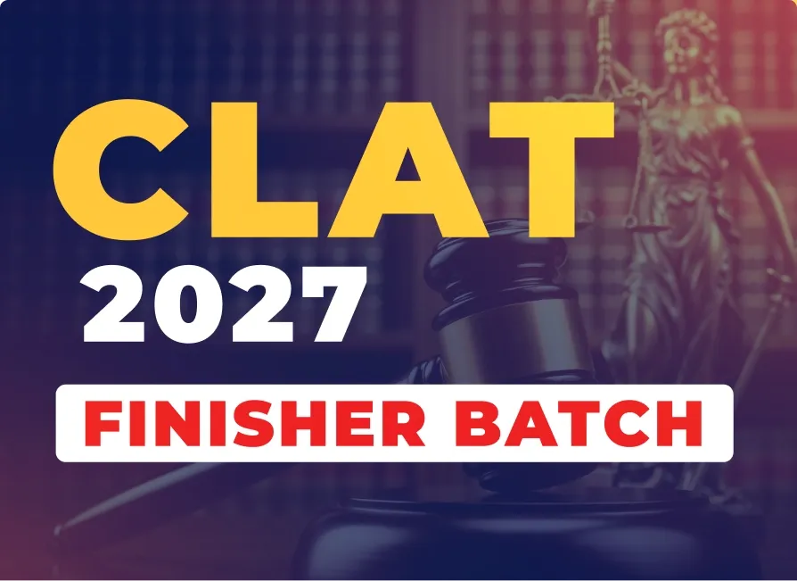
Perfect for droppers targeting CLAT 2027, happening in December 2026
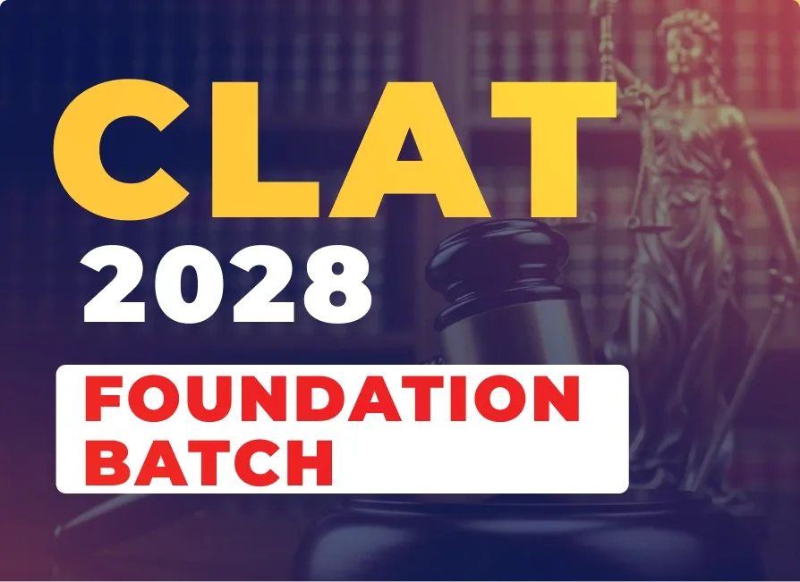
Best for Class 11 students targeting CLAT 2028, happening in December 2027.
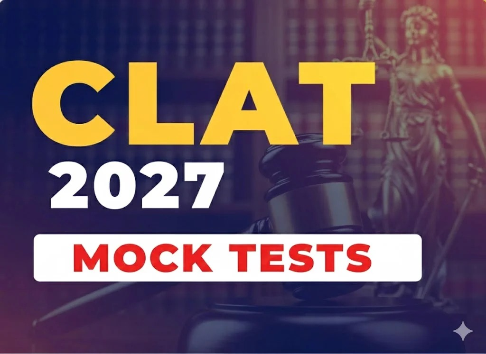
Designed by India’s top CLAT experts to help you practice like a topper.
Download the latest CLAT syllabus PDF covering all sections and topics in detail.
Download the latest CLAT syllabus PDF covering all sections and topics in detail.
Download the latest CLAT syllabus PDF covering all sections and topics in detail.
Download the latest CLAT syllabus PDF covering all sections and topics in detail.
Yes, we provide both offline classroom batches in Kolkata and online live programs accessible across India for flexible CLAT preparation.
In CLAT 2025, over 1310+ students from Law Prep Tutorial secured NLU admissions, including multiple top 10 AIR ranks.
Our Kolkata center is at New B.K Market, 16A, Shakespeare Sarani, Elgin, Kolkata, West Bengal – 700071.
Our faculty consists of experienced mentors and graduates from top NLUs specializing in Legal Aptitude, Logical Reasoning, English, and Current Affairs.
Yes, we offer free demo sessions for new students to experience our teaching methodology and classroom environment.
We combine 24+ years of academic legacy, AI-based analytics, personalized 1-on-1 mentorship, and proven national results.
We conduct five classes a week, each lasting 2–3 hours, ensuring optimal balance between lectures, practice, and revision.
Yes, all printed books and digital LMS materials are strictly updated to match the latest CLAT & AILET pattern.
Yes, our center assists outstation students in finding safe, verified PG and hostel accommodations near our Shakespeare Sarani center.
The Common Law Admission Test (CLAT) is the national gateway examination for admission into 26 premier National Law Universities in India.
Top NLUs include NLSIU Bengaluru, NALSAR Hyderabad, WBNUJS Kolkata, NLU Jodhpur, GNLU Gandhinagar, and NLIU Bhopal.
English Language, Current Affairs including General Knowledge, Legal Reasoning, Logical Reasoning, and Quantitative Techniques.
The CLAT UG paper contains 120 passage-based multiple choice questions to be completed in 120 minutes (2 hours).
Yes! Comprehensive AILET preparation and dedicated mock tests for NLU Delhi are provided to all enrolled students at no extra cost.
At Law Prep Tutorial Kolkata, we conduct five classes a week, each lasting 2–3 hours. This balanced schedule gives you consistent learning, practice, and revision time without overwhelming your routine. It’s designed to build discipline and keep your preparation on track for the CLAT and AILET exams.
You get a comprehensive set of printed books along with digital eBooks. Every topic, from Legal Reasoning to Quantitative Techniques, is covered in detail. With this dual access, you can revise anytime, anywhere, making us the most student-friendly CLAT coaching center in Kolkata.
We provide a year-long series of mock tests that simulate the real CLAT environment. These tests help you improve time management, accuracy, and confidence—key traits of every successful aspirant.
To strengthen every area of your preparation, you’ll take topic-wise and sectional tests regularly. This ensures you don’t just study but also master every section step by step, from English to Legal Aptitude.
Our All India Open Mock Tests let you compare your performance with thousands of aspirants nationwide. It helps you understand your national ranking and refine your strategy before the real exam.
Every month, we publish CLAT Express, a magazine exclusively for our students. It covers all major national, international, and legal events—your go-to source for GK and Current Affairs revision.
Each student receives personalized attention and one-on-one mentorship sessions. We help you understand your strengths and weaknesses, giving individual strategies to boost your scores and confidence.
Our advanced learning platform provides detailed analytics for every test. You’ll know exactly where you stand, which topics need improvement, and how to optimize your preparation time efficiently.
Every test you take gives you an All India Rank, allowing you to evaluate your performance against students from other Law Prep centers across India—including top scorers from cities like Delhi and Jaipur.
We use an AI-powered LMS that personalizes your study experience. It tracks your progress, highlights weak areas, and suggests targeted practice—making your preparation smarter, not harder.
Our teachers are veterans with over a decade of experience in CLAT and law entrance training. They bring unmatched expertise and passion, making us the best coaching for CLAT in Kolkata.
Before CLAT, we conduct offline marathon sessions at our center in Kolkata. These are intensive revision classes covering the entire year’s current affairs, key legal principles, and logical reasoning practice.
We organize PTMs regularly to keep parents informed about their child’s progress, attendance, and performance. It builds accountability and ensures collective effort for better results.
After every major mock test, we conduct detailed analysis sessions. You’ll review questions, learn strategies, and understand common mistakes directly from our faculty and mentors.
We believe no question should go unanswered. Regular doubt-clearing sessions, both offline and online, ensure you stay confident and conceptually strong throughout your journey.
We go beyond CLAT! All enrolled CLAT aspirants get free AILET preparation, including special mock tests and classes. This ensures you’re ready for both national law exams without additional cost.
At Law Prep Tutorial Kolkata, you’ll experience learning in a vibrant and inspiring environment. From interactive classrooms to weekend mentor meets, our local center combines the warmth of Kolkata with the precision of India’s top CLAT institute.
More than a coaching for CLAT in Kolkata, we are your long-term partners in success. Every class, mock, and mentorship session is designed to help you achieve your NLU dream confidently.
Our students call us the most reliable CLAT coaching institute in Kolkata because of our disciplined system, supportive mentors, and track record of producing NLU toppers year after year.
From study materials and tests to mentorship and analytics, we provide everything for your CLAT journey right here at Law Prep Tutorial Kolkata.
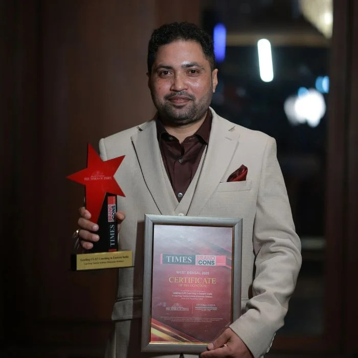
Law Prep Tutorial Kolkata is the best CLAT coaching in Kolkata, known for its consistent results, expert faculty, and student-first approach. With over 24 years of legacy, Law Prep has shaped the dreams of more than 1.5 lakh law aspirants across India, helping thousands secure admissions in top NLUs, including NLSIU Bangalore, NALSAR Hyderabad, and WBNUJS Kolkata.
At our Kolkata center, we combine experienced mentorship, AI-based analytics, and scientifically designed study material to create a holistic learning experience. Our vision is simple — to make quality CLAT preparation accessible to every deserving student. Our mission is to mentor, motivate, and prepare students with strategy-driven learning and personal guidance.
The center is led by Himanshu Shekhar, an academic visionary who understands the nuances of CLAT preparation like few others. With over a decade of experience, he has personally guided thousands of students to success in CLAT and other law entrance exams. His mentorship, backed by practical insight and deep exam understanding, inspires students to reach their true potential.
With innovation, integrity, and results at its core, Law Prep Tutorial Kolkata stands as the most trusted destination for serious CLAT aspirants in the City of Joy.
Kolkata has quietly but confidently emerged as one of India’s strongest hubs for CLAT aspirants. In the CLAT 2025 exam, nearly 1,700 students from Kolkata appeared for CLAT UG and 458 students appeared for CLAT PG. These are remarkable numbers considering that India had a total of around 65,000 CLAT applicants that year. It shows how the city is increasingly recognizing law as a prestigious and rewarding career path.
Over the past few years, awareness about law education in West Bengal has grown significantly. Parents and students are realizing that legal studies today open doors to corporate law firms, judiciary services, legal consulting, academia, and international opportunities. With more schools introducing legal awareness programs and debates, the academic culture of Kolkata — already known for its emphasis on intellectual growth — has naturally embraced law as a serious profession.
As a result, more students are now seeking quality CLAT coaching in Kolkata, looking for structured mentorship, mock test guidance, and comprehensive preparation strategies from reputed institutes like Law Prep Tutorial Kolkata.
The city’s reputation for legal education is strengthened by the presence of the West Bengal National University of Juridical Sciences (NUJS Kolkata) — one of India’s finest law universities. NUJS is consistently ranked among the top 5 law colleges in India, and as per the NIRF 2025 rankings, it proudly holds a spot in the top 3 National Law Universities (NLUs) under CLAT.
NUJS Kolkata’s academic excellence, top-notch faculty, and powerful placement record make it the dream destination for thousands of CLAT aspirants each year. The average placement package at NUJS Kolkata stands at around ₹20 LPA, one of the highest among all NLUs. Many of its graduates are placed in India’s leading law firms and global organizations, setting an inspiring example for young students in West Bengal who wish to follow the same path.
This makes Kolkata not only a hub of CLAT aspirants but also home to one of India’s most prestigious law universities — motivating more students from the region to aim higher every year.
Known as the “City of Joy,” Kolkata has always been a center of intellectual and cultural excellence. From literature and economics to law and governance, the city nurtures talent with depth, discipline, and a spirit of learning. The growing number of CLAT aspirants here reflects this mindset — one that values knowledge, debate, and justice.
Institutes like Law Prep Tutorial Kolkata have made it possible for students to pursue their legal dreams without leaving the city. With expert mentors, AI-based learning systems, and proven results, Law Prep has become the best CLAT coaching in Kolkata for serious aspirants. Every year, more students from Kolkata and nearby districts like Howrah, Barrackpore, and Salt Lake join CLAT programs, adding to the city’s impressive record in national law entrance exams.
Kolkata today stands at the intersection of tradition and opportunity — a city where ambition meets intellect. And as more students from this city enter India’s top NLUs, it’s clear that CLAT preparation in Kolkata truly matters, not just for personal success but for the bright future of India’s legal community.
| Particulars | Details |
|---|---|
| Full Form | Common Law Admission Test (CLAT) |
| Conducting Body | Consortium of National Law Universities (NLUs) |
| Purpose | Admission to UG & PG law programs offered by NLUs and other institutions |
| Exam Level | National-Level Entrance Exam |
| Mode of Exam | Offline (Pen & Paper) |
| Frequency | Once Every Year |
| Courses Offered | 5-Year Integrated LL.B (UG) & LL.M (PG) |
| Total NLUs | 26 National Law Universities |
| Medium | English |
| Question Type | Multiple Choice Questions (MCQs) |
| Total Questions (UG) | 120 |
| Duration | 2 Hours (120 Minutes) |
| Total Marks | 120 |
| Marking Scheme | +1 Correct, -0.25 Incorrect |
| Subjects | English, Current Affairs & GK, Legal, Logical, Quantitative |
| Eligibility | 10+2 with 45% (40% for SC/ST) |
| CLAT Exam Date | 6 December 2026 (tentative) |
| Official Website | consortiumofnlus.ac.in |
| S.No. | NLU Name | Location |
|---|---|---|
| 1 | National Law School of India University (NLSIU) | Bengaluru, Karnataka |
| 2 | NALSAR University of Law | Hyderabad, Telangana |
| 3 | National Law Institute University (NLIU) | Bhopal, Madhya Pradesh |
| 4 | WB National University of Juridical Sciences (WBNUJS) | Kolkata, West Bengal |
| 5 | National Law University, Jodhpur (NLUJ) | Jodhpur, Rajasthan |
| 6 | Gujarat National Law University (GNLU) | Gandhinagar, Gujarat |
| 7 | Hidayatullah National Law University (HNLU) | Raipur, Chhattisgarh |
| 8 | Dr. Ram Manohar Lohiya National Law University (RMLNLU) | Lucknow, Uttar Pradesh |
| 9 | National University of Advanced Legal Studies (NUALS) | Kochi, Kerala |
| 10 | Rajiv Gandhi National University of Law (RGNUL) | Patiala, Punjab |
| 11 | Chanakya National Law University (CNLU) | Patna, Bihar |
| 12 | Damodaram Sanjivayya National Law University (DSNLU) | Visakhapatnam, Andhra Pradesh |
| 13 | National Law University Odisha (NLUO) | Cuttack, Odisha |
| 14 | National Law University and Judicial Academy (NLUJA) | Guwahati, Assam |
| 15 | National University of Study and Research in Law (NUSRL) | Ranchi, Jharkhand |
| 16 | Tamil Nadu National Law University (TNNLU) | Tiruchirappalli, Tamil Nadu |
| 17 | Dr. B.R. Ambedkar National Law University (DBRANLU) | Sonipat, Haryana |
| 18 | Maharashtra National Law University, Mumbai | Mumbai, Maharashtra |
| 19 | Maharashtra National Law University, Nagpur | Nagpur, Maharashtra |
| 20 | Himachal Pradesh National Law University (HPNLU) | Shimla, Himachal Pradesh |
| 21 | Maharashtra National Law University, Aurangabad | Aurangabad, Maharashtra |
| 22 | Dharmashastra National Law University (DNLU) | Jabalpur, Madhya Pradesh |
| 23 | National Law University Tripura (NLUT) | Agartala, Tripura |
| 24 | GNLU Silvassa Campus | Silvassa, Dadra & Nagar Haveli |
| 25 | Dr. Rajendra Prasad National Law University (RPNLU) | Prayagraj, Uttar Pradesh |
| 26 | India International University of Legal Education & Research (IIULER) | Goa |
| 27 | National Law University Delhi (via AILET) | New Delhi |
Get daily CLAT updates, free resources, mock tests, and expert guidance directly from Law Prep Tutorial Kolkata on Telegram.